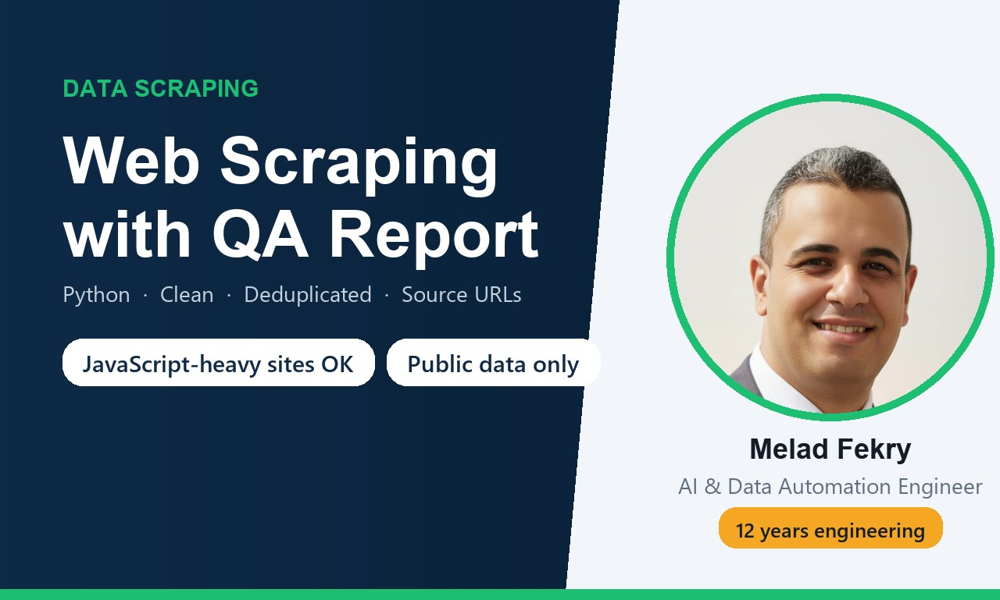
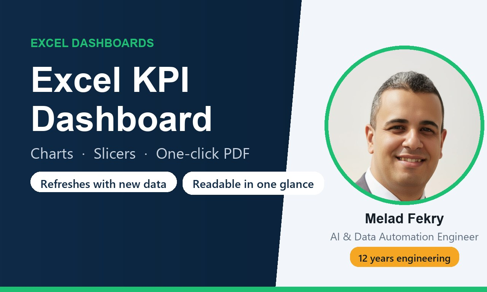

AI agents and LLM workflows, Python data pipelines with a written QA report, and Excel or Google Sheets tools your team can run every day. Twelve years of medical-device engineering behind every build: the failure cases get tested, not only the happy path.
See services on Fiverr See four projects with their testsEvery delivery includes working files, a test run on your real case, and honest notes on limits. Orders and payments go through Fiverr, so your money is protected until you approve the work.
Claude, GPT, n8n, Python. Agents that carry a workflow end to end, assistants that answer from your own documents, LLM features inside your app.
Formulas, Apps Script and VBA. Quote generators, one-click reports and PDFs, validation and forms, protected logic so nothing breaks by accident.

Clean, deduplicated data from public sources, with a written check: rows found versus expected, duplicates removed, what could not be found.

The KPIs that matter on one page, filters by month, region or product, and a refresh that takes seconds when new data arrives.
Three examples of work that is in use today. Client names stay private; the results do not. Four more are in the open with their source and their tests — including two bugs the tests caught in my own code before a client ever saw them.
Configurable Excel/VBA quotation tools for an industrial equipment supplier: product and option selection, protected pricing logic, validated inputs and print-ready customer documents. Several machines, several generators, all in daily use.
A nonprofit organisation dataset collected from public sources, each value traceable to its source page, website links checked, duplicates removed, gaps reported instead of guessed.
My own system, running daily: Claude and OpenAI models orchestrating scraping, scoring and reporting with budgets, rate limits, retries and verified outputs. It is where the guardrails I build for clients were tested first.
Simple on purpose. You always know what you get before you pay.
Your payment is held by Fiverr until you approve the delivery, revisions are part of the package, and every message and file stays in one place. It protects both of us.
I use AI where it earns its keep, and I say so when you ask. Nothing is delivered unreviewed: every build is tested on your real case before you see it.
Yes. Four complete projects are published with their source and their tests: a scraper with a QA report, an Excel quote generator, a KPI dashboard and an AI agent with budgets and rate limits. Every one runs offline, so you can clone the repository and get the same output I do.
Yes. Excel and Google Sheets files, Gmail, Slack, Notion, HubSpot, Airtable, webhooks and most REST APIs. Tell me the tools in your order and I confirm the fit before starting.
Send a copy with only the data needed for testing. Nothing is kept after delivery, and I tell you which AI provider sees what, if any.